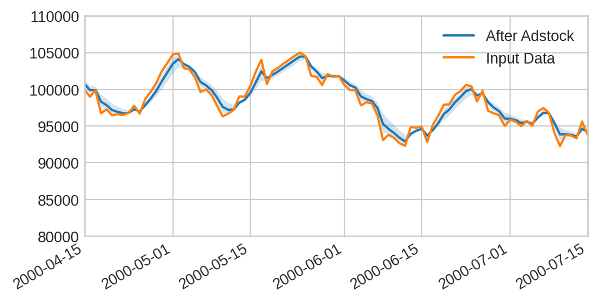

Learn how to use saturation and adstock transformations in Prophetverse to model diminishing returns and delayed effects of marketing activities.
There are many available effects available by default on Prophetverse. To get a glimpse of them, you can query all_objects from skbase.lookup:
from skbase.lookup import all_objectsfrom prophetverse.effects import BaseEffectall_objects(object_types=[BaseEffect], package_name="prophetverse", as_dataframe=True)
/opt/hostedtoolcache/Python/3.11.13/x64/lib/python3.11/site-packages/tqdm/auto.py:21: TqdmWarning: IProgress not found. Please update jupyter and ipywidgets. See https://ipywidgets.readthedocs.io/en/stable/user_install.html
from .autonotebook import tqdm as notebook_tqdm
name
object
0
BetaTargetLikelihood
<class 'prophetverse.effects.target.univariate...
1
ChainedEffects
<class 'prophetverse.effects.chain.ChainedEffe...
2
Constant
<class 'prophetverse.effects.constant.Constant'>
3
ExactLikelihood
<class 'prophetverse.effects.exact_likelihood....
4
FlatTrend
<class 'prophetverse.effects.trend.flat.FlatTr...
5
GammaTargetLikelihood
<class 'prophetverse.effects.target.univariate...
6
GeometricAdstockEffect
<class 'prophetverse.effects.adstock.Geometric...
7
HillEffect
<class 'prophetverse.effects.hill.HillEffect'>
8
HurdleTargetLikelihood
<class 'prophetverse.effects.target.hurdle.Hur...
9
IgnoreInput
<class 'prophetverse.effects.ignore_input.Igno...
10
LiftExperimentLikelihood
<class 'prophetverse.effects.lift_likelihood.L...
11
LinearEffect
<class 'prophetverse.effects.linear.LinearEffe...
12
LinearFourierSeasonality
<class 'prophetverse.effects.fourier.LinearFou...
13
LogEffect
<class 'prophetverse.effects.log.LogEffect'>
14
MichaelisMentenEffect
<class 'prophetverse.effects.michaelis_menten....
15
MultivariateNormal
<class 'prophetverse.effects.target.multivaria...
16
NegativeBinomialTargetLikelihood
<class 'prophetverse.effects.target.univariate...
17
NormalTargetLikelihood
<class 'prophetverse.effects.target.univariate...
18
PanelBHLinearEffect
<class 'prophetverse.effects.linear.PanelBHLin...
19
PiecewiseLinearTrend
<class 'prophetverse.effects.trend.piecewise.P...
20
PiecewiseLogisticTrend
<class 'prophetverse.effects.trend.piecewise.P...
21
TargetLikelihood
<class 'prophetverse.effects.target.univariate...
22
WeibullAdstockEffect
<class 'prophetverse.effects.adstock.WeibullAd...
Not bad, right? The best part is that you can combine them in a flexible way to create your own custom effects, and even create your own effects if you want to. Below, we showcase some interesting combinations you can use, and how to visualize their prior predictive distribution.
Loading the dataset
We load a synthetic dataset with daily frequency, to use in this example.
import matplotlib.pyplot as pltfrom prophetverse.datasets._mmm.dataset1 import get_datasety, X = get_dataset(return_y_and_X_only=True)y.head()
MichaelisMentenEffect(effect_mode='additive',
half_saturation_prior=<numpyro.distributions.continuous.HalfNormal object at 0x7ff2dcc4ef90 with batch shape () and event shape ()>,
max_effect_prior=<numpyro.distributions.continuous.HalfNormal object at 0x7ff249fc5c50 with batch shape () and event shape ()>)
Please rerun this cell to show the HTML repr or trust the notebook.
MichaelisMentenEffect(effect_mode='additive',
half_saturation_prior=<numpyro.distributions.continuous.HalfNormal object at 0x7ff2dcc4ef90 with batch shape () and event shape ()>,
max_effect_prior=<numpyro.distributions.continuous.HalfNormal object at 0x7ff249fc5c50 with batch shape () and event shape ()>)
Tip
Since Prophetverse and all effects are estimators, you can set and inspect the hyperparameters through get_params and set_params methods, and of course plug them into an automated hyperparameter tuning workflow. Checkout our Hyperparameter Tuning tutorial for more details.
Visualizing prior predictive distributions
To get a better sense of how these effects behave, we can visualize their prior predictive distributions using the plot_prior_predictive utility from prophetverse.utils.plotting.
We first visualize how the output of the effect behaves with respect to the input:
from prophetverse.utils.plotting import plot_prior_predictiveimport matplotlib.pyplot as pltfig, ax = plot_prior_predictive( mm_saturation, X=X[["ad_spend_search"]], mode="ad_spend_search", matplotlib_kwargs=dict(figsize=(6, 3)),)fig.show()
adstock = GeometricAdstockEffect( decay_prior=dist.Beta(10, 10),# Set normalize=True if you want an impulse of size 1 to have total# cumulative mass 1 over infinite horizon (weights sum to 1) normalize=True,)fig, ax = plot_prior_predictive( adstock, X=X[["ad_spend_search"]], mode="time", matplotlib_kwargs=dict(figsize=(6, 3)),)X[["ad_spend_search"]].plot(ax=ax, color="tab:orange")ax.set(xlim=("2000-04-15", "2000-07-15"), ylim=(80_000, 110_000))for line, label inzip(ax.lines, ["After Adstock", "Input Data"]): line.set_label(label)ax.legend()fig.show()

Combining Saturation and Adstock
And you can of course compose them! Use ChainedEffects to combine multiple effects in a sequence. Below, we combine Michaelis-Menten saturation with Weibull Adstock. You
ChainedEffects(steps=[('adstock_on_investment',
WeibullAdstockEffect(concentration_prior=<numpyro.distributions.continuous.HalfNormal object at 0x7ff249c34290 with batch shape () and event shape ()>,
scale_prior=<numpyro.distributions.continuous.HalfNormal object at 0x7ff249f957d0 with batch shape () and event shape ()>)),
('saturation',
MichaelisMentenEffect(effect_mode='a...
max_effect_prior=<numpyro.distributions.continuous.HalfNormal object at 0x7ff249fc5c50 with batch shape () and event shape ()>)),
('adstock_on_output',
WeibullAdstockEffect(concentration_prior=<numpyro.distributions.continuous.HalfNormal object at 0x7ff249e0c790 with batch shape () and event shape ()>,
scale_prior=<numpyro.distributions.continuous.HalfNormal object at 0x7ff28c725a90 with batch shape () and event shape ()>))])
Please rerun this cell to show the HTML repr or trust the notebook.
ChainedEffects(steps=[('adstock_on_investment',
WeibullAdstockEffect(concentration_prior=<numpyro.distributions.continuous.HalfNormal object at 0x7ff249c34290 with batch shape () and event shape ()>,
scale_prior=<numpyro.distributions.continuous.HalfNormal object at 0x7ff249f957d0 with batch shape () and event shape ()>)),
('saturation',
MichaelisMentenEffect(effect_mode='a...
max_effect_prior=<numpyro.distributions.continuous.HalfNormal object at 0x7ff249fc5c50 with batch shape () and event shape ()>)),
('adstock_on_output',
WeibullAdstockEffect(concentration_prior=<numpyro.distributions.continuous.HalfNormal object at 0x7ff249e0c790 with batch shape () and event shape ()>,
scale_prior=<numpyro.distributions.continuous.HalfNormal object at 0x7ff28c725a90 with batch shape () and event shape ()>))])
WeibullAdstockEffect(concentration_prior=<numpyro.distributions.continuous.HalfNormal object at 0x7ff249c34290 with batch shape () and event shape ()>,
scale_prior=<numpyro.distributions.continuous.HalfNormal object at 0x7ff249f957d0 with batch shape () and event shape ()>)
MichaelisMentenEffect(effect_mode='additive',
half_saturation_prior=<numpyro.distributions.continuous.HalfNormal object at 0x7ff2dcc4ef90 with batch shape () and event shape ()>,
max_effect_prior=<numpyro.distributions.continuous.HalfNormal object at 0x7ff249fc5c50 with batch shape () and event shape ()>)
WeibullAdstockEffect(concentration_prior=<numpyro.distributions.continuous.HalfNormal object at 0x7ff249e0c790 with batch shape () and event shape ()>,
scale_prior=<numpyro.distributions.continuous.HalfNormal object at 0x7ff28c725a90 with batch shape () and event shape ()>)
Extra: Visualizing the impulse response of adstock
The impulse response is one of the clearest ways to understand what adstock is doing.
By feeding in a single one-day spike of spend (an impulse), we can isolate the effect of the adstock transformation without confounding from the full time series.
Isolates carryover → shows exactly how much of today’s spend impacts tomorrow and the following days.
Builds intuition → a short tail means fast decay; a long tail means the campaign keeps influencing for weeks.
Compares models → geometric adstock has an exponential-like drop, while Weibull can flexibly capture rises before decay.
Business meaning → directly answers “If I invest 1 unit today, what incremental impact should I expect tomorrow, next week, and beyond?”
In short, the impulse response is the “fingerprint” of an adstock model — it makes lag and memory structures visible and interpretable.